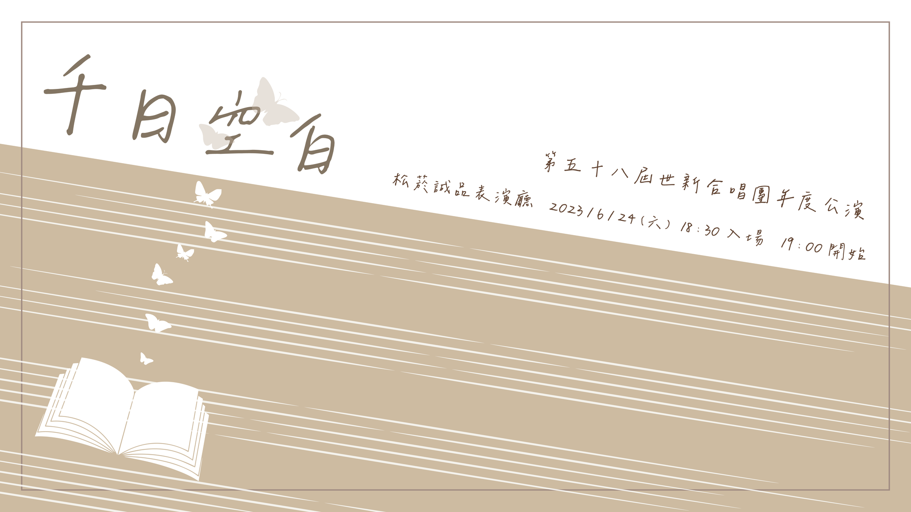

因疫情影響，年度公演已經三年未舉辦，我非常幸運能再加入合唱團的第一年參與到這個難得的機會，在校外的表演廳表演。
在學期結束後也不會停下練唱，希望能在活動當天拿出最好的表現。

在高中曾參加過校內的才藝表演，但並沒有入選，也在參加班際英文話劇的時候沒有表現的很好，曾一度對於舞台、表演感到抗拒、恐懼，但其實會參加這樣的社團，甚至是讀傳播相關學系，也許在某種層面來說，我還是非常嚮往舞台上發光，「享受舞台」是我現在非常嚮往的一件事。而社團內的大家也讓我在上台的時候有了更多的勇氣，想著自己並不是一個人，就更能踩穩步伐、唱出理想的音色。
在每次活動後能感受到的是，一群有著共同興趣喜好的人們一起為了同個目標努力，我很喜歡這種感覺，而每個活動也都有各自不同的事務要負責，我曾在不同活動中擔任大一負責人、宣傳負責人、小隊輔，撇除在音樂上造詣的進展，這也更讓我能與不同的人合作完成事項。
在社團中也認識了更多人，來自各個年齡、科系，擅長著不同的事物，有著不同的生長背景，但我們同時有著一個共同的終極目的，就是在音樂上都有著不少的熱忱，而這也讓我覺得能更融入這個地方，而年齡也好像沒那麼重要了，很幸運在這遇到了一群我很喜歡一起相處的朋友。